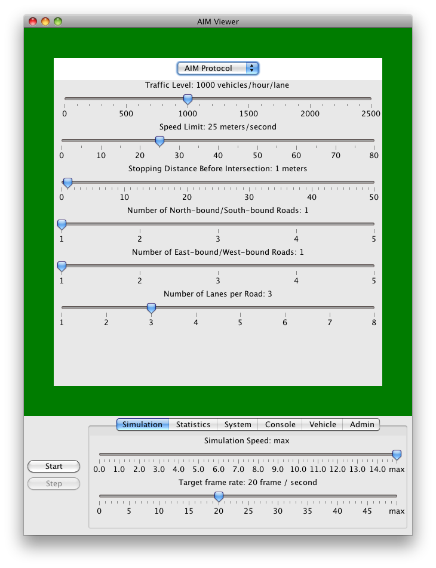

AIM4 Installation Guide
To compile and run the AIM4 simulator:
- Step 1. Download and install the latest version of Java SDK from
the official Java website. The AIM4 simulator makes use of the
features in Java SE 6, and it needs JDK SE 6 or any later version of JDK to compile the program.
- Step 2. Download and install the lastest version of
Apache Maven, which is used to
compile the source code of the simulator. The version of Maven we used is 2.2.1.
- Step 3. Download and unzip the source code of the AIM4 simulator.
The latest version can be found at the AIM website at http://www.cs.utexas.edu/~aim. After uncompressing
the file, you should find the root directory
of the source code at
aim4-root.
- Step 4. Compile the source code by using the following command in the
root directory of the source code:
mvn -Dmaven.test.skip=true assembly:assembly
Alternatively, you can type this command to compile the files.
These commands genreate an executable located at:
aim4-root/target/AIM4-1.0-SNAPSHOT-jar-with-dependencies.jar.
If you use the make jar command,
a copy of the executable can be found at
aim4-root/aim4.jar, which is exactly
the same at the one in aim4-root/target.
- Step 5. Run the executable by typing
java -jar target/AIM4-1.0-SNAPSHOT-jar-with-dependencies.jar
or type:
Then the following window should appear on your computer screen:

If the simulator runs out of memory, use the -Xmx option when you start
the simulator:
java -jar -Xmx1000M target/AIM4-1.0-SNAPSHOT-jar-with-dependencies.jar
Please read the AIM4 User Guide to see how to use the simulator.
To generate the API documentations, type:
or
Then the API documentation are generated.
The start page of the documentation is located at:
aim4-root/target/site/apidocs/index.html
You can open it using a web browser.
Finally, if you want to remove the executable and clean up the directory,
type:
or simply type:
Then the executable
aim4.jar and the files in the
target directory are removed.
Copyright (c) 2011 Tsz-Chiu Au (chiu@cs.utexas.edu), Peter Stone (pstone@cs.utexas.edu)
University of Texas at Austin
All rights reserved.
THIS SOFTWARE IS PROVIDED BY THE COPYRIGHT HOLDERS AND CONTRIBUTORS "AS IS"
AND ANY EXPRESS OR IMPLIED WARRANTIES, INCLUDING, BUT NOT LIMITED TO, THE
IMPLIED WARRANTIES OF MERCHANTABILITY AND FITNESS FOR A PARTICULAR PURPOSE ARE
DISCLAIMED. IN NO EVENT SHALL THE COPYRIGHT OWNER OR CONTRIBUTORS BE LIABLE
FOR ANY DIRECT, INDIRECT, INCIDENTAL, SPECIAL, EXEMPLARY, OR CONSEQUENTIAL
DAMAGES (INCLUDING, BUT NOT LIMITED TO, PROCUREMENT OF SUBSTITUTE GOODS OR
SERVICES; LOSS OF USE, DATA, OR PROFITS; OR BUSINESS INTERRUPTION) HOWEVER
CAUSED AND ON ANY THEORY OF LIABILITY, WHETHER IN CONTRACT, STRICT LIABILITY,
OR TORT (INCLUDING NEGLIGENCE OR OTHERWISE) ARISING IN ANY WAY OUT OF THE USE
OF THIS SOFTWARE, EVEN IF ADVISED OF THE POSSIBILITY OF SUCH DAMAGE.